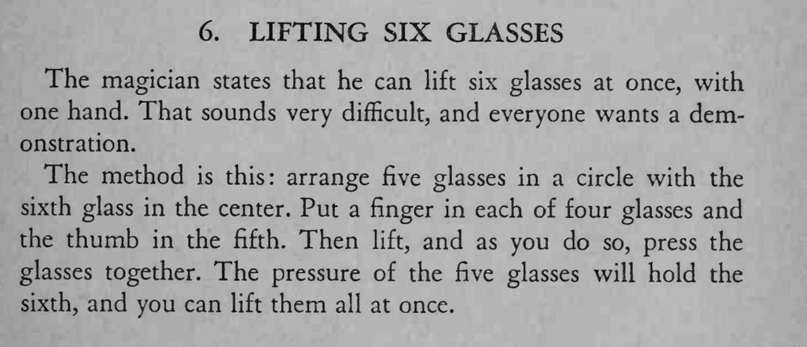

魔术师宣称能用一只手同时举起六只玻璃杯，并当场做到。
提起时要边提边夹紧，五只杯子围得越圆越稳。

The magician states that he can lift six glasses at once, with one hand. That sounds very difficult, and everyone wants a demonstration. The method is this: arrange five glasses in a circle with the sixth glass in the center. Put a finger in each of four glasses and the thumb in the fifth. Then lift, and as you do so, press the glasses together. The pressure of the five glasses will hold the sixth, and you can lift them all at once.